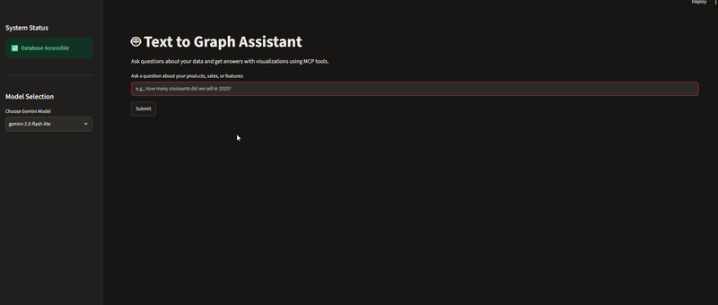

An application that lets anyone query a database in plain English and automatically get back
the SQL query, the data and the most relevant chart. Built with Google Gemini and the Model Context Protocol (MCP).
Topics covered :
- natural language to SQL with Gemini (prompt engineering, schema context)
- MCP architecture: client (Streamlit) separated from the server hosting the tool
- automatic chart selection and generation with Plotly
- PostgreSQL database
- containerization with Docker & Docker Compose
see the code on GitHub
Text to Graph Assistant
details
The database models the product sales of a French bakery 🥐: products (croissants, chocolatines, baguettes, ...)
with their category and price, their key ingredients, and detailed sales records from January 2022 to December 2025.
When a question is submitted, a first Gemini call acts as a gatekeeper and rejects questions that are unrelated to the data. Then the Streamlit app, acting as the MCP host, calls a single MCP tool, text_query_to_graph, which chains three steps:
- text_to_sql: Gemini converts the question into a read-only PostgreSQL query, using the database schema and business rules as context
- execute_sql: the query is run against the PostgreSQL database and returned as a DataFrame
- generate_graph: Gemini looks at the question and a sample of the data to choose the best Plotly chart (bar, line, pie or scatter) and its axes
The generated SQL, the data table and the chart are then displayed to the user. The Gemini model can be switched from the interface to work around the free tier rate limits. The whole stack (app + database) starts with a single docker-compose up.
Example questions: "How many croissants did we sell in 2025?", "Show me the sales trend over the last 5 years.", "What is the total revenue per category?"
When a question is submitted, a first Gemini call acts as a gatekeeper and rejects questions that are unrelated to the data. Then the Streamlit app, acting as the MCP host, calls a single MCP tool, text_query_to_graph, which chains three steps:
- text_to_sql: Gemini converts the question into a read-only PostgreSQL query, using the database schema and business rules as context
- execute_sql: the query is run against the PostgreSQL database and returned as a DataFrame
- generate_graph: Gemini looks at the question and a sample of the data to choose the best Plotly chart (bar, line, pie or scatter) and its axes
The generated SQL, the data table and the chart are then displayed to the user. The Gemini model can be switched from the interface to work around the free tier rate limits. The whole stack (app + database) starts with a single docker-compose up.
Example questions: "How many croissants did we sell in 2025?", "Show me the sales trend over the last 5 years.", "What is the total revenue per category?"

project run